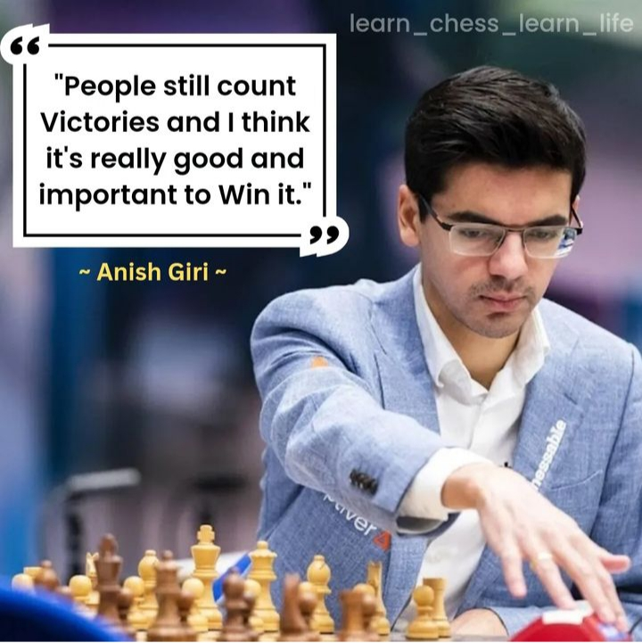

In chess,One needs to strategize and plan what he/she wants to do as compared to life,one needs to also plan and get a budget, he/she must think of the steps he'll take and so applies to chess. SIAW ALPATSON COBBINA the 2018 Africa chess winner ones siad"to win,ones mind must be stronger than his emotions". People make mistakes all because they allow thier emotions lead them. We must note that we make wrong decision whenever our emotions take over our mind.
One key thing about all great chess player is thier ability to focus.As a human FOCUS should be an impotant thing of your live. When you focus,you will be able to know your strength and weakness. Sometimes people give excuses why they are not able to focus but that shouldn't be so. comparing this to chess, that excuse is not relevant.
Always one strive to be the best version of yourself. Chess teaches that with every move you make,you have an opportunity to make a difference. You can be the one who steers the game in the desired direction or the one who makes a mistake and loses the game.
In chess you must respect your opponent and recognize that they are a formidable opponent.Respect goes a long way in improving upon your games and can lead to a better overall experience. This is a core value in life,because of respect a lot of people have been to place thier abilities never took them. Chess also teaches us to take our time to think about the situation in which we find ourselves over the board so as applied to life, we need to be patient and think about the problems facing us before making any move,
Always learn from your mistakes.Anytime over the 64 squares, it gives you the chance to learn from your blunders, inaccuracies and mistake for as to grow. But in order to grow you need to first analyse your mistakes
Winnimg is not a secret that belong to a very few, winning is something that can be learn by studing ourslves, studying the environment and making ourselves ready for any challenge that is in front of us.
Every game changer must be able to adapt to situation,build self-confidence,increase self awareness and must be creative.People may look down upon you but be deternimed, dont loss track look ahead and NEVER GIVE UP.You are a champion.Don't loss hope because you have the power